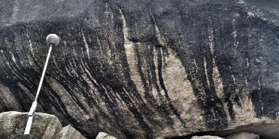
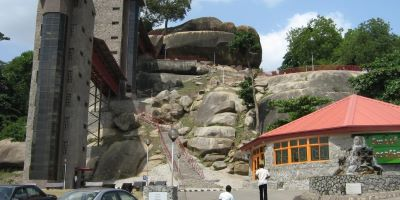
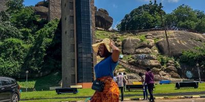
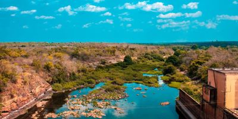
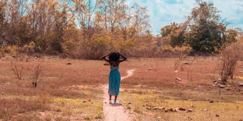
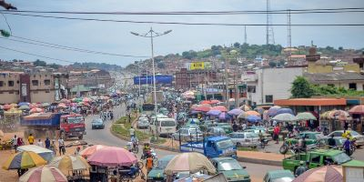

Pascal E. Okezie
Toggle Dark Mode
Home
Abeokuta Chamber of Commerce
Site Plan
Form
Abeokuta Chamber of Commerce Site Plan
A huge rock on Olumo rock

Olumo Rock, Abeokuta.

Tourists at the Olumo rock

Oyan river dam, Abeokuta.

A tourist at the Oyan river dam

Lafenwa market, Abeokuta.

 Pascal E. Okezie
Pascal E. Okezie